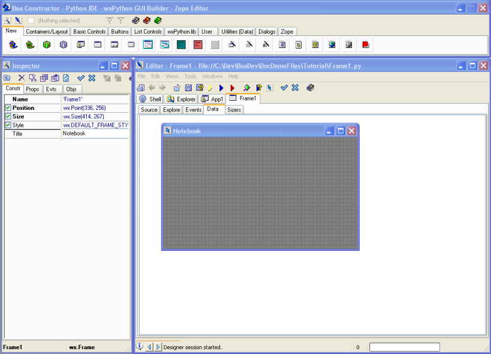

Select the Frame1 tab in the Editor to ensure that we are editing
the
Frame.
Start the Designer, by clicking the designer button from the
Editor
toolbar.

The Frame will be displayed as a drawing area (initially the
title will
show 'Frame1'
Two new panes will be displayed
in the Editor labeled the 'Data' pane and the 'Sizer' pane.
The Inspector Window will display the 'Constr' or Constructor
pane. This
pane allows you to edit
the size, position, style, variable name and title of a component. Edit
the field called 'Title'. Give the frame the name 'Notebook', when selecting another property, e.g. Style you will see that the title has changed. Alternatively you can also click on the "edit" button (...) to change the title and you will see the changes after you clicked on "OK" on the String Edit Dialog.
You have to save the
changes using the 'Post' button. You press the 'Post' button either on the Inspector
toolbar or the Editor toolbar.
The Designer Window will close.
You will notice that the source code has been updated to reflect
the title.
The Editor shows that the Source Code is changed by asterix on
the
notebook
tabs, so you need to press the save button.

 either on the Inspector
toolbar or the Editor toolbar.
either on the Inspector
toolbar or the Editor toolbar.